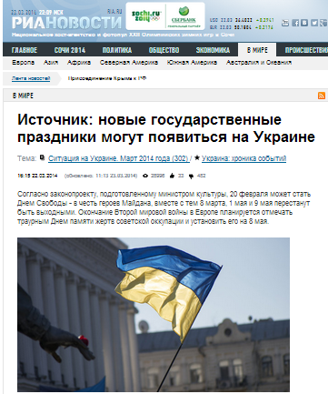

Министр культуры опроверг отмену празднования 9 мая в Украине
22 марта РИА Новости сообщили о том, что 8 марта, 1 мая и 9 мая перестанут быть выходными в Украине.Одновременно с этим по их данным появятся новые праздники — Окончание Второй мировой войны в Европе, которое планируется отмечать 8 мая (по аналогии с Европой) траурным Днем памяти жертв советской оккупации.Также 20 февраля может стать Днем Свободы — в честь героев Майдана и в память о подвиге Небесной сотни.
Все это сообщил им некий «источник» в ведомстве.Ссылается при этом он на соответствующий проект закона, якобы подготовленный министром культуры Евгением Нищуком, и который планируется в ближайшее время внести в Верховную раду.
Однако cам Евгений Нищук опроверг эту информацию.
«Относительно полной отмены каких-либо дат, — я слышал о 9 мая или 8 марта, — об этом речь даже не идет.Я не знаю чья это инициатива, возможно кого-то из депутатов», — сказал он.
Нищук добавил, что узнал о подобных инициативах из СМИ и объяснил, что можно говорить только о сокращении расходов на определенные празднования.
По материалам: Сегодня
Posted On: 2014-03-22T21:00:00

Content Date: 2014-03-22
Download Date: 2021-07-16
Document ID: L0C04F9UV